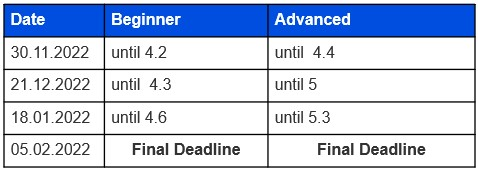

2 What’s Data Science and How Do I Do It?
2.1 What’s R and Datacamp Courses?
R is a programming language that was developed by statisticians in the early 90s for use in the calculation and visualization of statistical applications. R is now one of the most widely used programming languages in the field of data science. Code in R does not have to be compiled, but can be used interactively and dynamically. This makes it possible to quickly gain basic knowledge about existing data and to display it graphically.
R offers much more than just programming, but also a complete system for solving statistical problems. A large number of packages and interfaces are available, with which the functionality can be expanded and integration into other applications is made possible.
2.1.1 RStudio
Install R and RStudio locally
To get started you should install R and RStudio locally on your computer. Before we try to put in word how to do so: Here’s a DataCamp tutorial on how to do that. If you struggle, we will help you with installing at the “Introduction to Coding” Workshop or at our first Coding Meetup.
Until then, focus on learning the “hard skills” of programming with the courses on DataCamp.
That brings us to your curriculum in the next section!
2.1.2 DataCamp courses and Curriculum
The following list shows the required DataCamp courses for the Data Science with R Track at TechAcademy.
As a beginner, please stick to the courses of the “beginner” program.
Ambitious beginners can, of course, take the advanced courses afterward.
However, it would be best if you worked through the courses in the order we listed them.
The same applies to the advanced courses. Here, too, you should finish the specified courses in the given order. Since it can, of course, happen that you have already mastered the topics of an advanced course, you can replace some courses. If you are convinced that the course does not add value to you, feel free to replace it with one of the courses in the “Exchange Pool” (see list below).
To receive the certificate, both beginners and advanced learners must complete at least 6 courses of the curriculum (6/7 courses). After completing the curriculum and the project’s requirements, you will receive your TechAcademy certificate!
Data Science in R Fundamentals (Beginner)
- Introduction to R (4h)
- Intermediate R (6h)
- Data Manipulation with dplyr (4h)
- Cleaning Data in R (4h)
- Introduction to Data Visualization with ggplot2 (4h)
- Exploratory Data Analysis in R (4h)
- Reporting with R Markdown (4h)
Data Science in R (Advanced)
- Intermediate R (6h)
- Data Manipulation with dplyr (4h)
- Cleaning Data in R (4h)
- Introduction to Data Visualization with ggplot2 (4h)
- Text Mining with Bag-of-Words in R (4h)
- Writing Efficient R Code (4h)
- Reporting with R Markdown (4h)
Data Science in R (Advanced) – Exchange Pool
2.1.3 Helpful Links
- RStudio Cheat Sheets
- RMarkdown Explanation (to document your analyses)
- StackOverflow (forum for all kinds of coding questions)
- CrossValidated (Statistics and Data Science forum)
2.2 What’s Python and Datacamp Courses?
Python is a dynamic programming language.
You can execute the code in the interpreter, so you do not have to compile the code first.
This feature makes Python very easy and quick to use.
The excellent usability, easy readability, and simple structuring were and still are core ideas in developing this programming language.
You can use Python to program according to any paradigm, whereby structured and object-oriented programming is most straightforward due to the structure of the language.
Still, functional or aspect-oriented programming is also possible.
These options give users significant freedom to design projects the way they want and great space to write code that is difficult to understand and confusing.
For this reason, programmers developed specific standards based on the so-called Python Enhancement Proposals (PEP) over the decades.
2.2.1 Google Colab, Anaconda and Jupyter
Normally before you can use Python, it must be installed on the computer. In order to make it easier to use Python right out of the box, we use Google Colab as an online Notebook. Using Google Colab will be proficient enough for the TechAcademy DataScience Course. If you want to expand your view, you can circle back to this Introduction and decide Python and Jupyter on your machine to play around with.
Python is already installed on Linux and Unix systems (such as macOS), but often it is an older version. Since there are differences in the handling of Python version 2 – which is not longer supported anymore – and version 3, we decided to work with version 3.6 or higher. One of the easiest ways to get both Python and most of the best known programming libraries is to install Anaconda. There are detailed explanations for the installation on all operating systems on the website of the provider. With Anaconda installed, all you have to do is open the Anaconda Navigator and you’re ready to go. There are two ways to get started: Spyder or Jupyter. Spyder is the integrated development environment (IDE) for Python and offers all possibilities from syntax highlighting to debugging (links to tutorials below). The other option is to use Jupyter or Jupyter notebooks. It is an internet technology based interface for executing commands. The big advantage of this is that you can quickly write short code pieces and try them out interactively without writing an entire executable program. Now you can get started! If you have not worked with Jupyter before, we recommend that you complete the course on DataCamp first. There you will get to know many tips and tricks that will make your workflow with Jupyter much easier.
In order to make your work and, above all, the collaboration easier, we are working with the Google Colab platform that contains a Jupyter environment with the necessary libraries. You can then import all the data necessary for the project with Google Drive. We will introduce this environment during our first Coding Meetup. Until then, focus on learning the “hard skills” of programming with your courses on DataCamp. This brings us to your curriculum in the next section.
2.2.2 DataCamp courses and Curriculum
The following list shows the required DataCamp courses for the Data Science with Python Track at TechAcademy. As a beginner, please stick to the courses of the “beginner” program. Ambitious beginners can, of course, take the advanced courses afterward. However, it would be best if you worked through the courses in the order we listed them.
The same applies to the advanced courses. Here, too, you should finish the specified courses in the given order. Since it can, of course, happen that you have already mastered the topics of an advanced course, you can replace some courses. If you are convinced that the course does not add value to you, feel free to replace it with one of the courses in the “Exchange Pool” (see list below).
To receive the certificate, both beginners and advanced learners must complete at least 6 courses of the curriculum (6/7 courses). After completing the curriculum and the project’s requirements, you will receive your TechAcademy certificate! To receive the certificate, both beginners and advanced learners must complete at least 6 courses of the curriculum (6/7 courses).
Data Science with Python Fundamentals (Beginner)
- Introduction to Data Science in Python (4h)
- Intermediate Python (4h)
- Data Manipulation with pandas (4h)
- Cleaning Data in Python (4h)
- Introduction to Data Visualization with Matplotlib (4h)
- Exploratory Data Analysis in Python (4h)
- Python for Data Science Toolbox (Part 1) (3h)
Data Science with Python (Advanced)
- Intermediate Python (4h)
- Data Manipulation with pandas (4h)
- Cleaning Data in Python (4h)
- Introduction to Data Visualization with Matplotlib (4h)
- Python Data Science Toolbox (Part 2) (4h)
- Feature Engineering for NLP in Python (4h)
- Writing Efficient Code with pandas (4h)
Data Science with Python (Advanced) - Exchange Pool
2.3 Your Data Science Project
2.3.1 Prelude
Now that you have learned the theoretical foundation of Data Science in the DataCamp courses, you can put your skills into practice. We have put together a project for you based on real data sets. You can read about the details of this project in the following chapters of this project guide. If you still feel a little unsure about how to start off, there will be a Coding Introduction on November 9, 2022, where we will give you a general sense on how to start off with Python or R. Of course, we will also describe the project. We will discuss everything you need to know during the first Coding Meetup, which will take place on November 23, 2022. After that, your work on the project will officially begin. You can find the exact project tasks together with further explanations and hints in the following chapters.
2.3.2 Coding Meetups
To give you a little overview on the dates of our Meetups, you can find all the dates in one go here!
- 02.11.2022, Kick-Off Event
- 09.11.2022, Introduction to Coding Workshop
- 23.11.2022, Coding MeetUp 1
- 14.12.2022, Coding MeetUp 2
- 11.01.2023, Coding MeetUp 3
- 05.02.2023, Coding MeetUp 4
To receive the certificate, it is essential that you hand in your project at least 3 times during the semester. The following dates are due dates:
